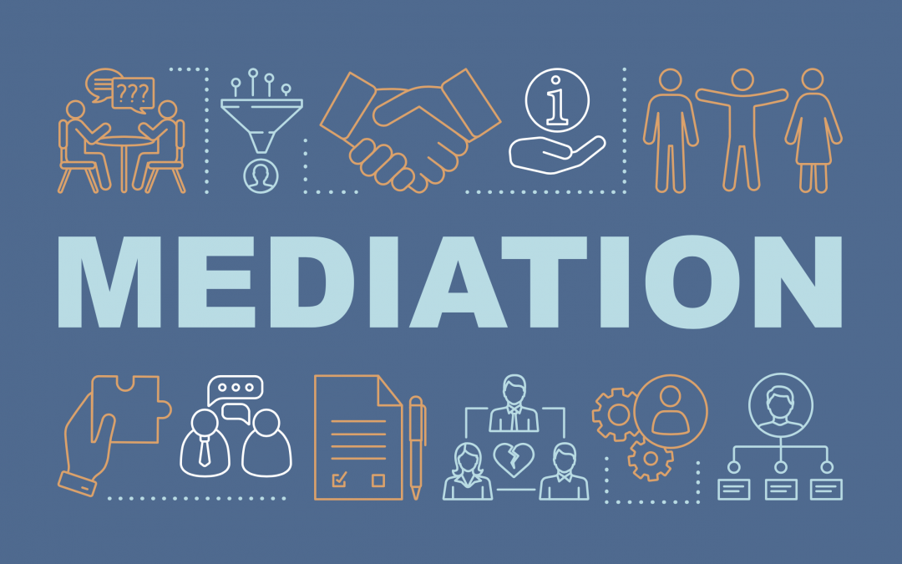

Bienvenue
Ce site présente, de façon claire et accessible, les principes de la psychologie appliquée à la médiation et à la gestion des conflits. Il s'adresse à toute personne souhaitant mieux comprendre pourquoi les tensions apparaissent, comment elles évoluent, et quelles méthodes pratiques permettent de les désamorcer.

Objectifs du site
L'objectif est double : d'une part, expliquer simplement les mécanismes psychologiques qui alimentent les conflits (émotions, perceptions, biais), d'autre part, proposer des outils concrets pour améliorer la communication et construire des accords durables. Vous trouverez des explications, des exemples concrets, des fiches pratiques et des vidéos pédagogiques.
Pour qui ?
Ce site s'adresse aux étudiants, aux professionnels (RH, managers, éducateurs), aux médiateurs en formation et à toute personne confrontée à des tensions relationnelles. Aucun prérequis n'est nécessaire : le ton est volontairement grand public et pédagogique.
Ce que vous trouverez ici
Des explications simples, des exemples concrets et des outils prêts à l'emploi : modèles d'accord, checklists de préparation, et courtes vidéos illustratives. Chaque vidéo est accompagnée d'une transcription et d'un résumé pour faciliter l'accès à l'information.
Envie d'aller plus loin ?
Si vous préparez une médiation, téléchargez la fiche de préparation dans la section Ressources, ou regardez une simulation vidéo pour voir le processus en action. Pour toute question ou suggestion de contenu, vous pouvez m'envoyer un email à l'adresse: afkcoly@example.com.
Comment utiliser ce site